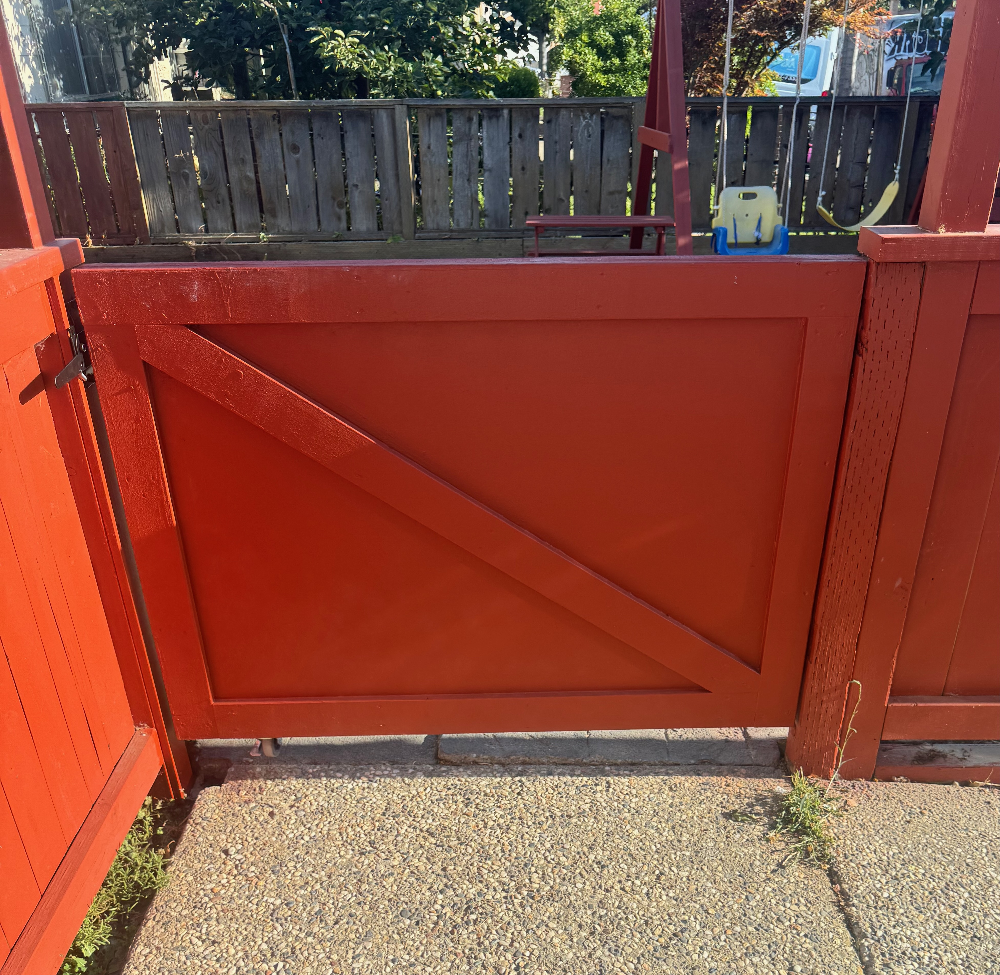
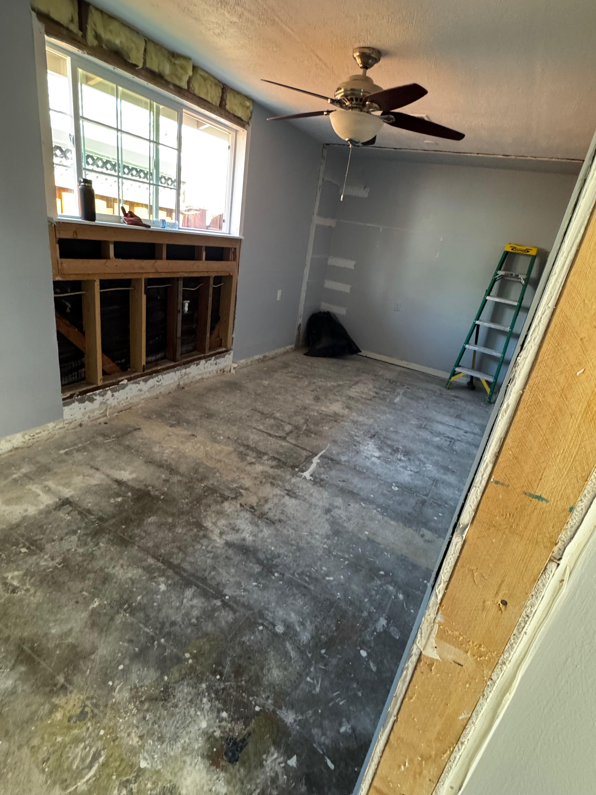
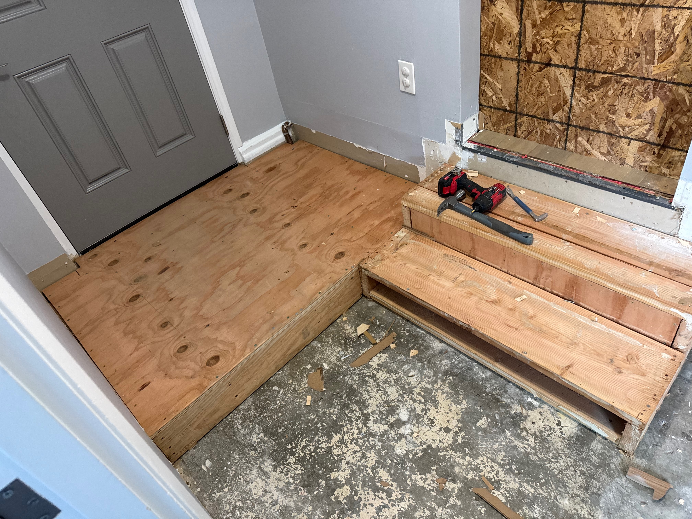
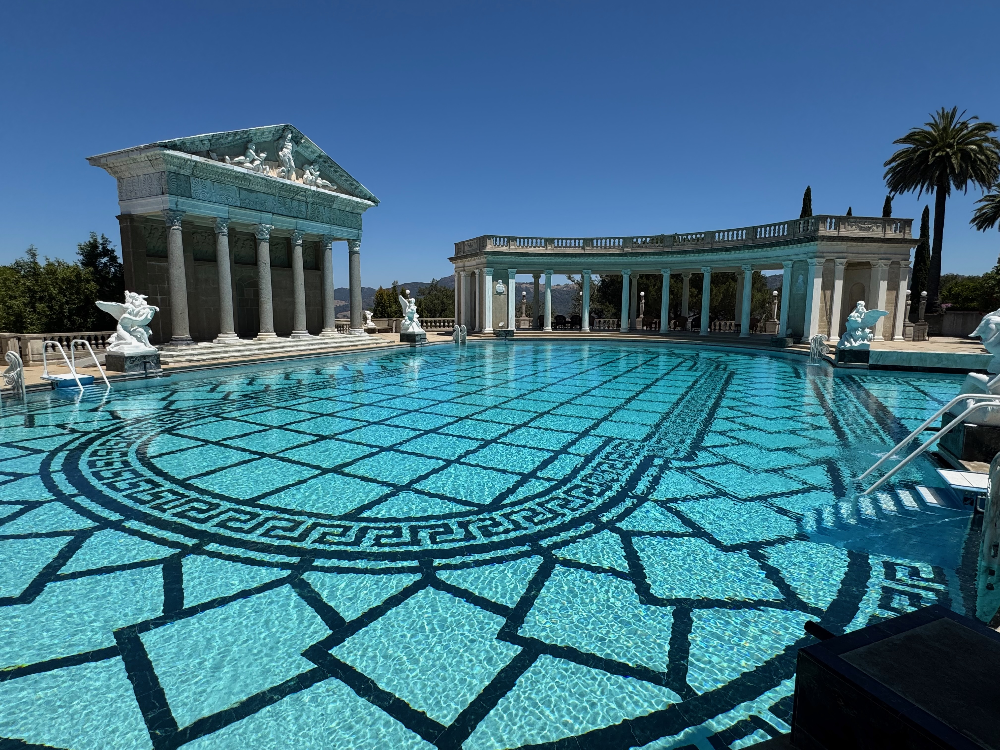

My name is Edgar Ceja Garcia, and I am currently a History student at the University of California, Riverside. Before transferring to UCR, I attended Evergreen Valley College in San Jose, California, where I completed two years of community college coursework. My academic journey has helped me develop a stronger appreciation for education, personal growth, and the importance of understanding the world around me. I chose to study history because I have always been fascinated by the people, civilizations, cultures, and events that have shaped our world. I am particularly interested in ancient and medieval history, including the civilizations of Greece and Rome and the development of European societies. What I enjoy most about studying history is discovering how events from hundreds or even thousands of years ago continue to influence the present. As I continue my education at UC Riverside, I hope to strengthen my research, writing, and critical thinking skills while exploring different opportunities for my future career.
Outside of my academic life, I have gained valuable professional experience working in residential construction. Through my work with ECC Construction, I have participated in a variety of projects involving general labor, demolition, renovation, and property improvements. These experiences have taught me the importance of responsibility, teamwork, patience, and attention to detail. Working in construction has also helped me develop practical problem-solving skills and an appreciation for the effort required to complete a project successfully. Whether preparing a worksite, removing existing materials during a renovation, or assisting with the construction of residential features, I have learned that even seemingly small tasks contribute to a larger goal. Balancing my responsibilities at work with my education has encouraged me to become more disciplined and independent. Although construction and history may seem like very different fields, I believe both have helped me develop useful skills that I can carry into future professional opportunities.
In my personal life, I enjoy exploring new places, learning languages, exercising, and expanding my knowledge of different cultures. One of my favorite activities is hiking, especially in locations with interesting landscapes, historical significance, or beautiful natural scenery. Traveling throughout California has given me opportunities to visit coastal regions, forests, mountains, and historical landmarks. I particularly enjoy visiting places where I can connect my interest in history with real-world experiences, such as museums, historical buildings, and cultural sites. I also have an interest in learning foreign languages, especially French, because I believe language learning offers a valuable way to understand other cultures and perspectives. Additionally, physical fitness is an important part of my routine because it encourages consistency, determination, and personal improvement. Looking toward the future, my main goal is to continue growing both academically and professionally while remaining open to new experiences. I hope to make the most of my time at UC Riverside by developing my abilities, meeting new people, and preparing for a meaningful career. Ultimately, I want to build a future that allows me to continue learning, contribute positively to the people around me, and pursue opportunities that challenge me to become a better version of myself.
• Assisted with general construction and labor tasks
• Prepared and maintained clean, organized job sites
• Worked alongside team members to complete daily projects

Wooden fence gate completed as part of a residential construction project.

Assisted in demolishing the interior of a residential property, removing drywall and other existing materials to prepare the space for a complete renovation.

Additional demolition work completed alongside a coworker as part of the same residential renovation project.

Visited Hearst Castle in San Simeon, California, exploring its historical architecture, artistic collections, and classical Greek and Roman influences.